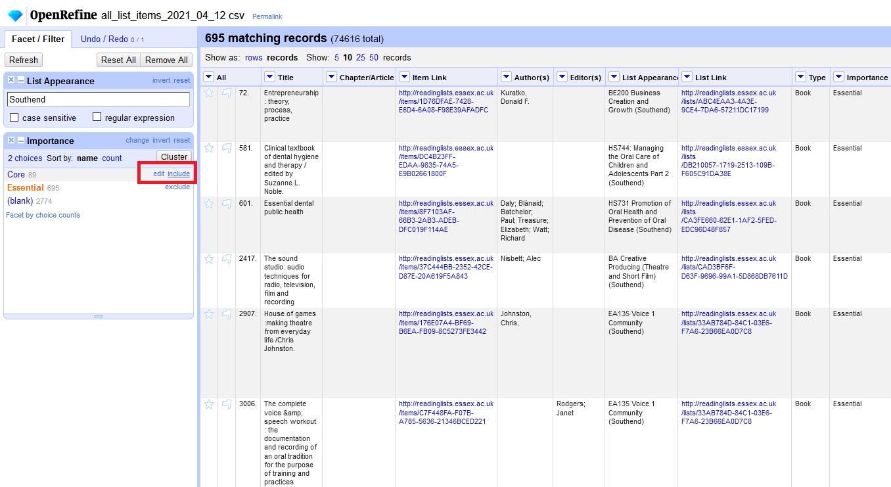

OpenRefine for Talis Aspire users
D. Spence
13th of October, 2021
Introduction to OpenRefine
OpenRefine (formerly Google Refine) is a tool for exploring data sets, cleaning and transforming it into something useful and enhancing it into something even more useful. The goal of this guide is to explain the basics of OpenRefine using Talis Aspire data as an example. OpenRefine supports file types like XLS, CSV and MARC so it is very versatile for library workers.
I have been using OpenRefine to proactively find problems in reading lists and fix them procedurally. On the reports tab of Talis reading lists you can export a list of all published items in a comma separated values files. This can be then be imported into OpenRefine. Below I have included a table explaining what each of the fields translates to.
Installing OpenRefine
The instructions to install OpenRefine can be found on the OpenRefine download page. It supports Windows, Mac and Linux and runs in your web browser. I have had success running it on my personal computer and on office computers. If you do not know whether you have Java installed on Windows, the version that comes bundled with Java is the easiest way to get started. As most university staff are no longer permitted to install software on campus computers I have requested OpenRefine be to the University of Essex Software Hub. This is currently in progress as of September 2021.
Downloading Talis Aspire data
Data can be downloaded from Talis Aspire Reports. For this guide I have been focusing on the All List Items section as my role focuses on checking lists for errors. It is worth bearing in mind that larger data sets require more powerful computers. When I tried to import 603,000 items my computer seized up due to a lack of memory. By default OpenRefine caps out at one gigabyte (GB) of memory, jumping up to 2GB and 4GB allowed me to import the full data set with ease. Instructions on how to do this can be found in the Using OpenRefine book. It is best practice to only work on what you think you need to because actions can get sluggish.
Filtering list status only to only published brings it down to a manageable 129,000. Depending on the status of rollover you may want to filter by Time Period to catch items that are unpublished. Once you have your data click download CSV. This will e.mail the Talis user a link to download the CSV file. For all published items this came out to about 53 megabytes.
Importing data into Refine
I found searching for the app via the Windows Start menu does not work so you may need to locate the install directory. Double click the OpenRefine icon where you installed it. For me this was C:\Users\Spence\Desktop\openrefine-3.4.1\openrefine.exe. This will open your default web browser to the URL http://127.0.0.1:3333/ this URL only works when the OpenRefine application is running. The home screen should have a browse button to locate the all_list_items_2021_04_12.csv you just downloaded. From there just click next and Create Project to start playing around with your data. Once you have created a project it will be visible on the Open Project tab to the left. It saves whatever you’ve done and has a full history.
Aspire data fields
Below I have included some notes on the fields Talis exposes. If you are familiar with editing reading lists most of this will look familiar but some of these fields are hidden. Knowing what field to filter first is the key to finding the right list items that most need attention.
| Field name | Example | Notes |
|---|---|---|
| Title | Managing and Organizations: An Introduction to Theory and Practice | Book title, where an article has no part this field will be used instead of the below field |
| Chapter/Article | Managing Individuals | Chapter title, if used |
| Item Link | http://readinglists.essex.ac.uk/items/5d6776ef-6f78-40bb-b8f4-536d0db63e10 | Links directly to the bookmark so you can preview it |
| Author(s) | Clegg, Stewart R.; Kornberger, Martin; Pitsis, Tyrone S.; Mount, Matt | Chapter author takes priority over book author, shown at top level. Sometimes this contains a full name in a single name field. |
| Editor(s) | Bloggs, Joe | Editor is only shown when bookmark is expanded |
| List appearance | AB123: Some subject | |
| List Link | http://readinglists.essex.ac.uk/lists/9C9EE6E3-556A-071E-EE4D-59CE13C35432 | |
| Type | Chapter, Audio Visual Document etc. | Selected from the Resource Type drop down menu. When a bookmark is part of a book or journal the has part type takes priority over the part of |
| Importance | Essential, Core, Supplementary etc. | Blank if not set. There are some lists that contain deprecated importance such as Supplementary and Further. Helpful for finding essential items that are not available in the catalogue |
| ISBN10 | 1526487969 | Mostly used for books published before 2007 |
| ISBN13 | 9781526460103; 9781526460097; 9781526487964 | 13 digit ISBN. Talis takes the book art from the first ISBN13. In testing I have found that the paperback usually is the most reliable ISBN13 to contain book art for the reading list. |
| ISSN | 1234-5678 | Print ISSN, often the EISSN is listed as ISSN. Electronic ISSN. Ideally split in the middle by a hyphen to ensure compatibility with Talis Aspire Digitised Content |
| EISSN | 8765-4321 | Electronic ISSN. |
| LCN | 2304268 | Record number from the catalogue. Where a dual bookmark is used the print LCN must come first. Only works with b records Re2304268 would incorrectly link direct to the Rb2304268 |
| DOI | 10.4135/9781446218563 | Talis generates https://0-doi-org.serlib0.essex.ac.uk/10.4135/9781446218563 for the student. A DOI will automatically create a chapter/article DOI and book DOI even if no direct DOI to the chapter exists. |
| Date of publication | 2019 | 2019 |
| Issue | 4, Spring | |
| Volume | 87 | Often used for journals but occasionally for a series of books too. The bookmarklet sometimes get false positives for this field sometimes |
| Edition | 5th | Book edition |
| Start page | 1 | Some older bookmarks feature page range in a single field |
| End page | 33 | |
| Publisher | SAGE Publications | |
| Format | physical | Appears to be unused, some older bookmarks refer to whether it is hardbound or print |
| Web Address | https://publisher.com/book/chapter1; https://publisher.com/book/chapter2 | Generally a copy of the Primary Web Address field |
| Time Period | 2021/22 | Can be used to filter by academic year |
| Date Added | 25/03/21 | Date bookmark originally added to Talis Aspire |
| Added By | Sloman,Albert | Person that added the bookmark to Talis Aspire |
| Last Published | 14/05/21 | Date the item was last published on Talis Aspire |
| Library Note | Please can you purchase this as an eBook? | Only visible to academic and library staff |
| Student Note | Read chapter 2. This is important with regards to your assignments | Used to provide context or instruction on a bookmark |
| CKEY | Appears to be unused | |
| TADC Request ID | 16901 | Matches the Talis Aspire Digitised Content request number |
| TADC Request Status | EXPIRED, LIVE, REFERRED, REJECTED, SUCCESS, WITHDRAWN | Status from Talis Aspire Digitised Content. Note: LIVE may be inaccessible outside of the lists term dates as speicifed in the module hierarchy |
| TADC Bundle ID | 609e95091b02c916396a12c4 | Used to link to the PDF, on the list this is automatically turned into https://content.talisaspire.com/essex/bundles/609e95091b02c916396a12c4 for the student |
| Has Container | tenantSections:82C5A361-B412-5E12-CADA-7756EFC4D76D | This relates to the structure and order the reading list. tenantSection indicates the bookmark is part of a section, like Week 9. tenantList indicates the bookmark is just on the root of the list. |
| Primary Web Address | https://publisher.com/book/chapter1; https://publisher.com/book/chapter2 | Chapter, Article etc. URL |
| Secondary Web Address | https://publisher.com/book | Book, Journal etc. URL |
| Online Resource | https://publisher.com/book/chapter1 | Filled in when the Online Resource is checked on the Talis Aspire bookmark. Copied from the below instruction |
| Online Resource Source | Web Address | Selects which of the above fields (Web Address, DOI) the VIEW ONLINE button bookmark points to. If this field is blank it means that the VIEW ONLINE button is hidden from the top of the reading list. A good way to filter out items that are not currently available or listed digitally. |
It has been difficult to detect the precedence of Web Address and Primary Web Address. Need to investigate which field or fields Joe Munzer’s bulk upload tool works on.
Filtering data
Text filters
Large data sets are cumbersome. The first thing you might want to do is a simple text filter. It searches the entire column for any cell contains what you type. The great thing about this is that it is interactive so your results update as you type each character. By clicking the arrow left of List Appearance and clicking Filter > Text Filter File you can now search for all reading lists that contain the word Southend which for me narrows down to 3518 items. Note the invert toggle on the left side will allow you to search for fields that does not contain your query. You can layer up searches on multiple columns to really drill down on specific issues.

Faceting
Faceting finds commonalities between cells and groups them together, sort of like pivot tables in Excel. On the Importance column click facet and perform a text facet. This now allows us to toggle items. I have 695 Essential items and 89 Core items. Clicking Essential or Core will give you one set but if you mouse over additional fields you can include them. For this example include all Core and Essential items.

I have found faceting really useful for finding where the same books are used across multiple reading lists or which list contains the most problems (such as lacking a LCN). If you want to see an example or where it is really powerful try doing it on the Edition column.
Querying a column
Lets say we want to find out which of the essential items taught at Southend do not contain a Southend local control number? To do this we click LCN > Edit column > Add column based on this column. Give the new column name a title like No Spydus link. Here we can query the cell value using an expression. The value.contains() command will check to see if a cell contains a value and return a true or false. So typing the below line will return false for any essential bookmarks that don’t contain a Southend LCN.
value.contains("ECC"). The results show true and false depending on the cell contents")
The preview tab shows a dozen examples in real-time as you type so you can experiment with your expression until you get the desired results. If you have a good filter you may see a variety of results depending on the data.
Further text faceting
Running another facet on the newly created No Spydus link column narrows it down even further. Blank may indicate an essential reading on an external website or a Kortext item that does not yet have a catalogue record yet. A plain LCN may indicate an electronic resource.
As a practice exercise you could try putting in the skills you have learned so far to find a print book that can be found in the Southend Spydus catalogue which is not yet linked correctly on Aspire.
Regular expressions
Regular expressions are similar to a standard find and replace but they have the ability to include wildcards. Say you wanted to find all papers discussing labour, instead of searching twice for the American English spelling labour you can just use the regular expression labou?r. The question mark indicates the u is optional. Many fields have inconsistencies. They might lack a semicolon or use an & in one bookmark and ‘and’ in the next. Regular expression is pretty daunting but a lot of the time the hard work is done for you if you to a web search. John Little has an Intro to RegEx which expands on this well.
Transforming data
Fixing URLs
One of the simpler tasks but most useful is a find and replace. A common example is a URL that does not contain the University of Essex proxy. Say you have found some unauthenticated DOI.org URLs by running a text filter of “://doi.org/.” In my case I have 101 results on the Online Resource Web Address field, so we will work on that one. From browsing the data I find 4 types of leading text:
We will tackle the top one first and then modify the expression to cover the others. On the Online Resource Web Address column click Edit Column > Add column based on the column and use the following GREL expression:
value.replace("https://doi.org/", "https://0-doi-org.serlib0.essex.ac.uk/") If you delete the s in https you can see in real-time how the expression works on different cells. Now if we want to work on more than one type of cell in one go we can chain them using if logic as below.
if URL contains = https://doi.org/ (A)
swap for https://0-doi-org.serlib0.essex.ac.uk/ (B)
job done, move to next cell
else if URL contains http://doi.org/ (C)
swap for https://0-doi.org.serlib0.essex.ac.uk/ (D)
job done, move to next cell
else if URL contains https://dx.doi.org/ (E)
swap for https://0-doi-org.serlib0.essex.ac.uk/ (F)
move to next cell
else if URL contains http://dx.doi.org/ (G)
swap for https://0-dx-doi.org.serlib0.essex.ac.uk/ (H)
move to next cell
give upTo try and make it simpler I have written out the following which corresponds to the letters above: If A is true do B, otherwise if C is true do D, otherwise if E is true do F, otherwise if G is true do H, otherwise give up.
All it is trying to do is say try this, if that doesn’t work try the next thing until you get to the end. Sometimes it isn’t possible to write code for every use case. It is a garbage-in-garbage-out process. If you have a dozen odd URLs at the end that you can’t fix programmatically it may be quicker to correct those manually. Wrapping it up in GREL looks something like this:
if(value.startsWith("https://doi.org/"),value.replace("https://doi.org", "https://0-doi-org.serlib0.essex.ac.uk/"),if(value.startsWith("http://doi.org/"),value.replace("http://doi.org", "https://0-doi-org.serlib0.essex.ac.uk/"), if(value.startsWith("https://dx.doi.org/"), value.replace("https://dx.doi.org", "https://0-dx-doi-org.serlib0.essex.ac.uk/"), if(value.startsWith("http://dx.doi.org/"),value.replace("http://dx.doi.org", "https://0-dx-doi-org.serlib0.essex.ac.uk/"), value)))) You have to be careful with any fail states because the bulk upload tool will interpret an empty null field as you saying delete the existing URL. It’s always worthwhile taking a glance at your fields before uploading in case you end up telling it to delete URLs that still need fixing.
I have chosen to force https instead of preserving http in line with Crossref’s recommendation. I have not come across any examples of https causing an issue. Where an article is open access I have left it as doi.org because it is against the spirit of open access to lock it behind an Essex account. One way we could isolate these is by including a hashtag #openaccess in the library note field or including #oa after the URL to exclude those URLs.
The helpful yellow popup tells us that we have modified 101 fields which is what we filtered to. Checking these URLs they appear to work great.
I have found this technique useful for fixing DOI, HeinOnline, Westlaw URLs and I believe it will be useful for Box of Broadcasts also. Using Joe Munzer’s tool allows us to fix hundreds of URLs in one go that would take hours to find and fix by hand. If the library switches to a different proxy service this will come in very useful. One thing I have started doing is including a hashtag in the library note for #openaccess. This way when the script is run in the future it does not alter open access items because that would be locking free content behind an Essex login.
Exporting for Joe’s bulk upload tools
Exporting is really easy. Three components are required Item ID, Old URL and New URL. To get the Item ID you will need to take the Item Link Collumn and modify it using the following command.
value.replace("http://readinglists.essex.ac.uk/items/","") This should look something like the following:
Initially I tried using the value.slice(38) function. I found the replace method to be more precise because URLs can be so inconsistent. Slice can be really handy if you want to extract something from the middle because you can put in a second field to remove leading and trailing characters.
Once you have finished transforming your New URL field you just click Export > Comma-separated value.
Enhancing data
Rows vs. records
Open Refine has two options in the top left, rows and records. Rows behaves like normal spreadsheet software where each line has its own number. Records for Aspire data is more bookmark focused, so a single bookmark would be one record number but could have multiple lines in the record for each appearance on various modules and reading lists. Aspire stores multiple ISBNs, URLs, authors in semicolon separated list. The easiest way to compare between two databases is to get an exact match. If we go to ISBN13 > Edit Cells > Split multi-valued cells… you can split the field into several rows using the ; delimiter. This will create a row for each ISBN13 in your matching selection. If you are comparing ISBNs between databases it is much simpler to compare data one piece at a time and splitting into rows allows this. If you’re done with your comparison or editing and want to go back just reverse the process by clicking ISBN13 > Edit Cells > Join multi-valued cells… using the delimiter of your choice.
Cross command
The Cell cross command is one of the easiest ways to find matching data between database A and database B, returning the cell of your from database B to enhance database B. One use case I have found is comparing ISBN13 or DOI in the reading list database with an open access repository/directory. In this example I am continuing from the above section where I split out the ISBN13s into rows. I am then going to do the same on the directory of open access book, which I have imported into Open Refine using the project title DOAB. The below video from Ruth Tillman’s tutorial is how I learned to use this tool.
Regular expressions
Using the value.find() command combined with a regular expression allows you to extract data from a cell. For instance ISBN13s beginning with 978, but might have hyphens or underscores
value.find(/978[_-]?\d{1,3}[_-]?\d{1,3}[_-]?\d{1,3}[_-]?\d{1,4}/)[0]This tries to match all ISBNs. In my trial I got 8911 out of 8936, the other 25 were false positives that just happened to contain 978. From there you can simply find and replace all hyphens and underscores to get clean ISBNs for comparison. I am quite new to regular expressions so there are likely better examples of this online. Don’t waste your time trying to reinvent the wheel unless it helps you understand how regular expressions work.
APIs and comparing data sets
There are a number of free and open access resources we can consult to save money when resourcing such as:
- OAPEN - a managed repository of around 18,000 academic open access books with strong permanence
- Directory of Open Access Books - links to around 44,000 open access books (incporates the OAPEN list)
- Directory of Open Access Journals – 16,500 open access peer reviewed journals. 3.5GB of article metadata
- Unpaywall - almost 30 million free scholarly articles, based on the Crossref DOI database (85GB)
You can download these datasets and import them into OpenRefine and run comparison checks on them. As Unpaywall explains the status of open access can change from time to time (usually that older articles become open access) so downloading this data in full is not always the best way to work. A REST API lets you query the live data and you can do this in your browser as below:
https://library.oapen.org/rest/search?query=9789047420552&expand=metadata
https://doaj.org/api/v2/search/journals/glossa
https://api.unpaywall.org/v2/10.5114/hm.2018.76078?email=d.spence@essex.ac.uk
You can search through a range of fields by consulting the API documentation, the above are some useful examples. As these services are free there is often a fair use policy to keep bandwidth costs down. For the resourcing I have done on essential items this is at most the tens of thousands and that has taken a while but been compliant. It is more practical to save the data locally if you are running large queries very regularly.
If you want to do this on scale you can use it in OpenRefine by concatenating the API strings with data you have in Aspire like DOI or ISBN.
Preparing data
Round up
This guide is a work in progress, I wanted to make something very specific to our platforms and not reinvent the wheel where great tutorials already exist. Library Carpentry workshop is one example. I want to thank Samantha at Suffolk Cooperative and the volunteers who gave their time to deliver it for allowing me to attend their workshops which covered several subjects. I am keen to collaborate on solutions if you think OpenRefine could help with your work. In the bibliography below I have included some links that I found useful while learning OpenRefine and writing this guide. If you have any comments, feedback or suggestions please get in touch with me by email.